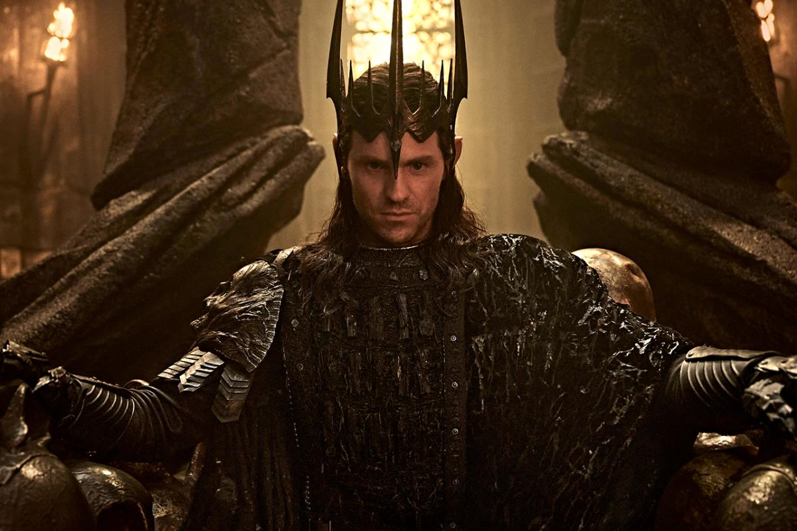
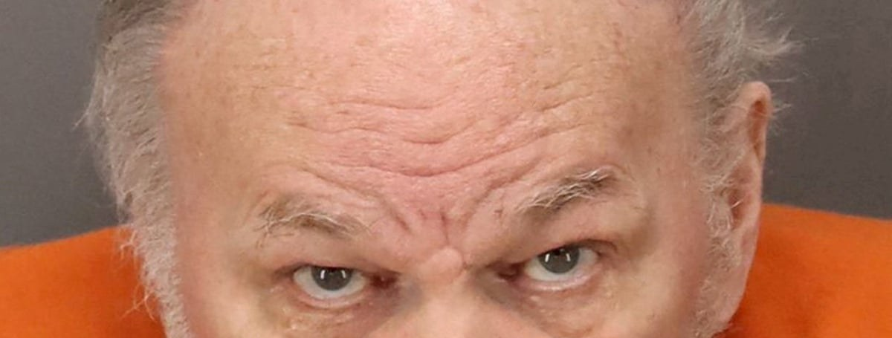
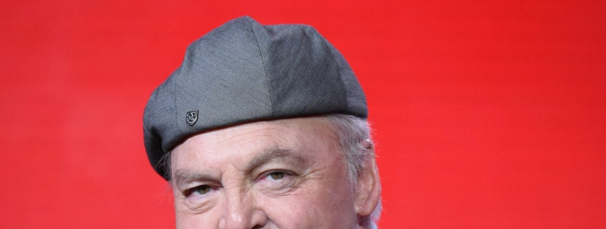

The Rings of Power season 3 lands today, and critics are split on Sauron’s war

The first four episodes of Prime Video’s Tolkien epic drop today, with two more on Nov. 18 and the last two on Nov. 25. The new season jumps five years ahead to the height of the War of the Elves and Sauron, as Charlie Vickers’ Dark Lord sets out to forge the One Ring. Simon Pegg plays the Balrog.
Reviews are the most divided the show has had. Decider says it’s “finally truly epic,” and Nerdist and Collider call it the best season yet. IndieWire gave it a C, and others say it’s still buried in lore and Númenor subplots. Rotten Tomatoes was at 78% this morning, lower than either earlier season. Critics saw only seven of the eight episodes.
 Season 3 trailer on YouTube →
·
Decider review →
·
Season 3 trailer on YouTube →
·
Decider review →
·
 Variety →
Variety →
Meghan’s father Thomas Markle is jailed after cutting off his ankle monitor

Federal prosecutors say Markle, 82, cut off his electronic monitor at 1:45 a.m. Tuesday, days after his arrest on charges of keeping child sexual abuse material in Los Angeles–area storage units he had rented since 2008. A magistrate judge in Tampa revoked his release the same day. She had already ordered a mental competency exam, with a report due Nov. 20.
The Duchess of Sussex has said she is “deeply distressed.” She revealed that a letter with “troubling allegations” about her father was sent to London police in 2019, and said she kept him away from her children “to protect them.” Page Six reported that she looked tense at a Brussels engagement with Prince Harry on Tuesday.
Stacy Keach, TV’s Mike Hammer and a celebrated stage actor, dies at 85

Keach died Tuesday at home in Magdalenka, Poland, after what his wife called “a long and difficult battle with a serious heart condition and heart failure.” He had a heart attack onstage in Chicago in 2017 during his one-man Hemingway show Pamplona.
He was a leading Shakespeare actor who played Hamlet, Richard III and Lear, worked twice with John Huston (Fat City), and won a Golden Globe as Hemingway. He also played Cheech and Chong’s stoner cop, the warden on Prison Break, and roles in American History X and Nebraska. He served six months in a British prison over a 1984 cocaine arrest at Heathrow, then spoke out about addiction. His last role was George Clooney’s father in Jay Kelly.
Bottom of the news
- Grand Theft Auto VI pre-loads are live ahead of the Nov. 19 launch, and Tove Lo’s “Blood In Your Eyes” debuted in the pre-load trailer.
- Warner Bros. is rebooting You’ve Got Mail, with Jason Orley attached to direct.
- HBO released character posters for its Harry Potter trio, with a first taste of Hans Zimmer’s score; the series premieres Dec. 25.
- A24 released the trailer for Jesse Eisenberg’s musical comedy The Debut, starring Julianne Moore and Paul Giamatti, in theaters Dec. 11.
- A resurfaced 2010 red-carpet clip of Katy Perry and Russell Brand is getting another look after Brand’s sentencing.
- Jacob Elordi will produce and star as Gary Gilmore in United Artists’ new The Executioner’s Song.
- Jordan Fisher will play The Kid in the Broadway Purple Rain musical, with previews starting in March.